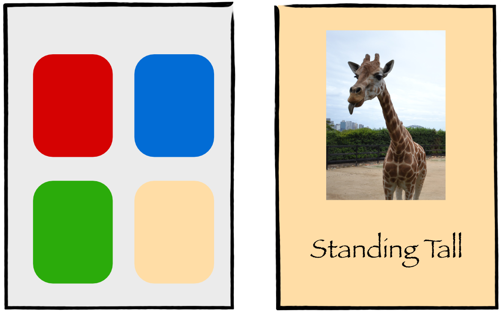
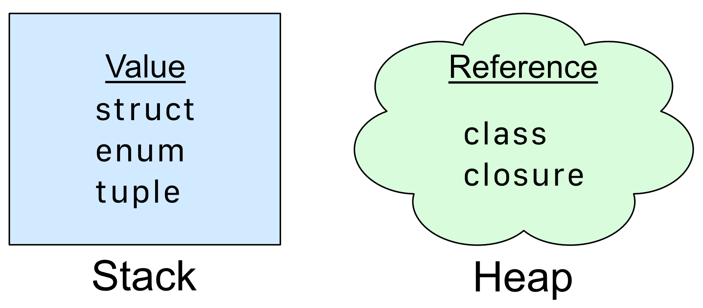
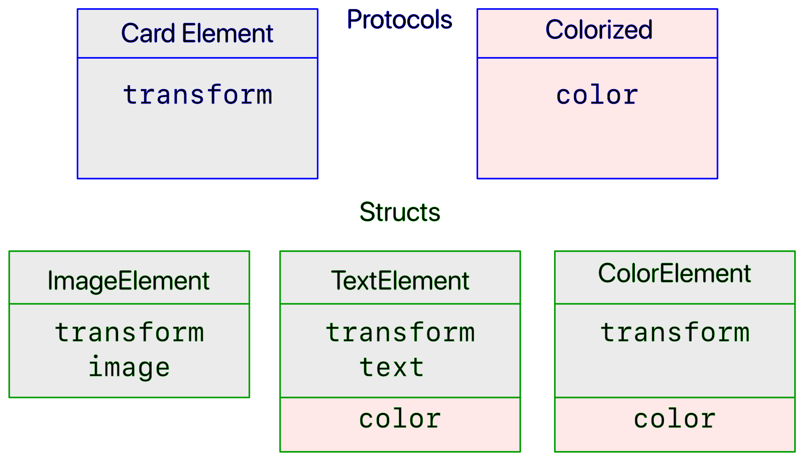
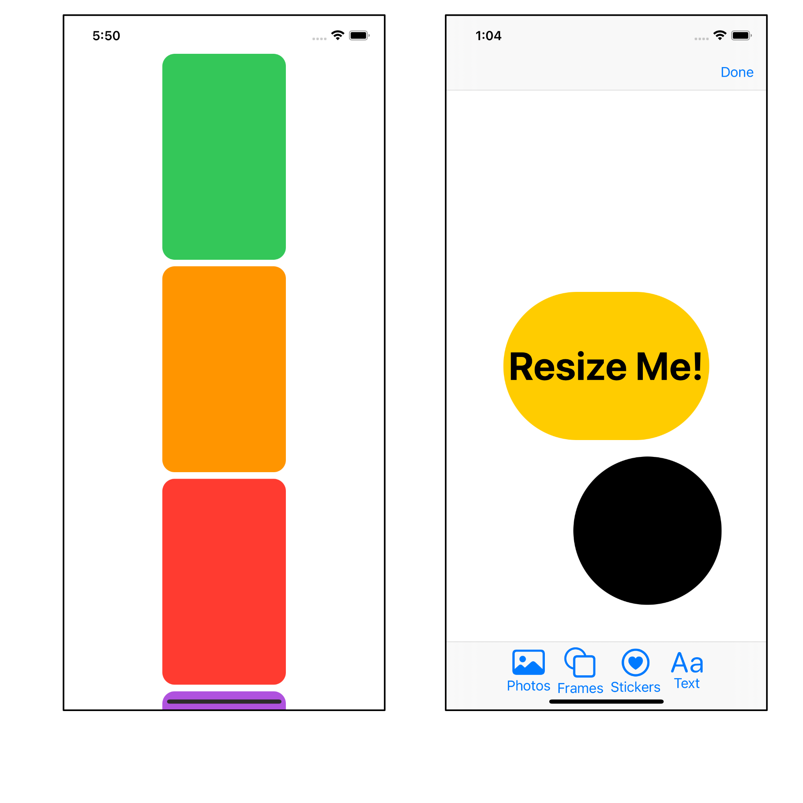
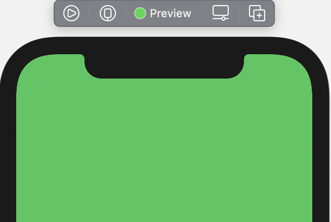
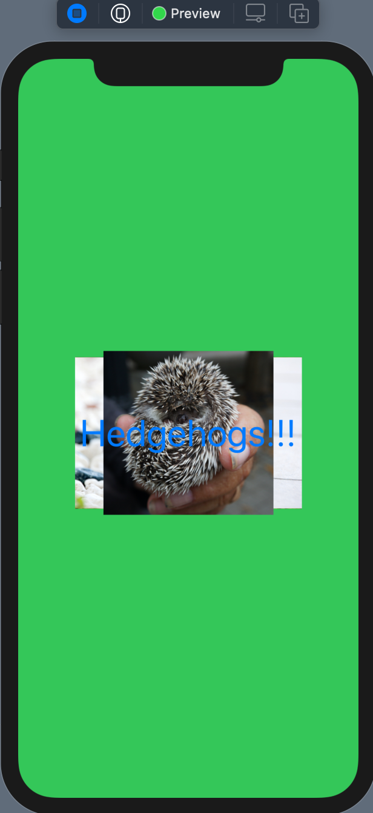
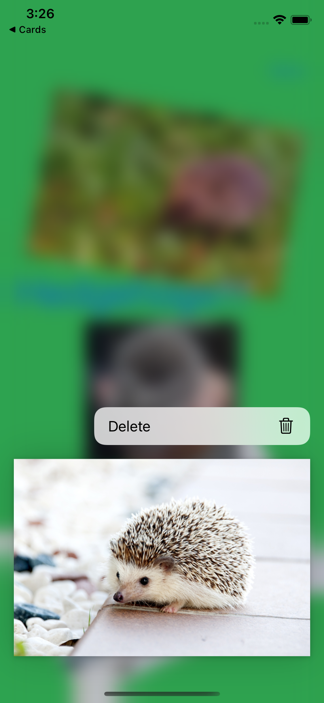

Chapter 15: Structures, Classes & Protocols¶
It’s time to build the data model for your app so you have some data to show on your app’s views.
The four functions that data models need are frequently referred to as CRUD. That’s Create, Read, Update, Delete. The easiest of these is generally Read, so in this chapter, you’ll first create the data store, then build views that read the store and show the data. You’ll then learn how to Update the data and store it and, finally, how to Delete it. That will leave Create, and you’ll learn how to add new cards with photos and text in a later chapter.
Starter project changes¶
There are a few differences between the challenge project from the last chapter and the starter project of this chapter:
- Operators.swift: contains a new operator to multiply a
CGSizeby a scalar. - Preview Assets.xcassets: contains three cute hedgehogs from http://pexels.com.
- PreviewData.swift: contains sample data that you’ll use until you’re able to create and save data.
- TextExtensions.swift: contains a new view modifier to scale text.
➤ If you are continuing with your own project, be sure to copy these files into your project.
Data structure¶
Take another look at the back of the napkin sketch:

Even with this rough sketch, you can get an idea of how to shape your data.
You’ll need a top level data store that will hold an array of all the cards. Each card will have a list of elements, and these elements could be an image or text.

You don’t want to constrain yourself to image or text though, as you might add new features to your app in the future. Any data model you create now should be extensible, meaning as flexible as possible, to allow future capabilities.
Value and reference types¶
Skills you’ll learn in this section: Differences between value and reference types
Before creating the data model, you’ll need to decide what types to use to store your data. Should you use structures or classes?
A Swift data type is either a value type or a reference type. Value types, like structures and enumerations, contain data, while reference types, like classes, contain a reference to data.

At runtime, your app instantiates properties and assigns them to separate areas of memory, called the stack and the heap. Value types go on the stack, which the CPU manages and optimizes, so it’s very fast and efficient. You can instantiate structures, enumerations and tuples without counting the cost. The heap, however, is much more dynamic and allows an app to allocate and deallocate areas of memory, while maintaining reference counts. This makes reference types less efficient. When you instantiate a class, that piece of data should stick around for a while.
Swift Dive: Structure vs class¶
Skills you’ll learn in this section: How to use structures and classes
When initializing classes and structures in code, they look very similar. For example:
let iAmAStruct = AStruct()
let iAmAClass = AClass()
The important difference here is that iAmAStruct contains immutable data, whereas iAmAClass contains an immutable reference to the data. The data itself is still mutable and you can change it.
iAmAStruct.number = 10 // compile error
iAmAClass.number = 10 // no error - `number` will update to 10
When you assign value types, such as a CGPoint, you make a copy. For example:
let pointA = CGPoint(x: 10, y: 20)
var pointB = pointA // make a copy
pointB.x = 20 // pointA.x is still 10
pointA and pointB are two different objects.
With a reference type, you access the same data. For example:
let iAmAClass = AClass()
let iAmAClassToo = iAmAClass
iAmAClassToo.number = 20 // this updates iAmAClass
print(iAmAClass.number) // prints 20
Swift keeps a count of the number of references to the AClass object created in the heap. The reference count here would be two, and Swift won’t deallocate the object until its reference count is zero.
Changing the data like this can be a source of errors for unwitting developers. One of Swift’s principles is to prevent accidental errors, and if you favor value types over reference types, you’ll end up with fewer of those accidents. In this app, you’ll favor structures and enumerations over classes where possible.
Creating the card store¶
Skills you’ll learn in this section: When to use classes and structures
Returning to the complex matter of deciding how to store your data, you need to choose between a structure and a class.
In general, when you hold a simple piece of data, such as a Card or a CardElement, those are lightweight objects that you won’t need forever. You’d make those a structure. However, when you hold a data store that you’re going to use throughout your app, that would be a good candidate for a class. In addition, if your piece of data has publisher properties, it must conform to ObservableObject, where the requirement is that the data type is a class.
Now you’ll get started creating your data model, beginning at the bottom of the data hierarchy, with the element.
➤ In the Model group, create a new Swift file called CardElement.swift.
➤ Replace the code with:
import SwiftUI
struct CardElement {
}
This is the file where you’ll describe the card elements. You’ll come back to this shortly to define the data you’ll hold.
➤ Create a new Swift file called Card.swift and replace the code with:
import SwiftUI
struct Card: Identifiable {
let id = UUID()
var backgroundColor: Color = .yellow
var elements: [CardElement] = []
}
You set up Card to conform to Identifiable, with the protocol’s required property id. Later, you can use this unique id to locate a card and to iterate through the cards.
You’re also holding a background color for the card and an array of elements for all the images and text that you’ll place on the card.
➤ Create a new Swift file named CardStore.swift and replace the code:
import SwiftUI
class CardStore: ObservableObject {
@Published var cards: [Card] = []
}
CardStore is your main data store and your single source of truth. As such, you’ll make sure that it stays around for the duration of the app. It isn’t, therefore, a lightweight object, and you choose to make it a class.
There is a second reason for it to be a class. The protocol ObservableObject requires any type that conforms to it to be a class.
ObservableObject is part of the Combine framework. A class that conforms to ObservableObject can have published properties in it. When any changes happen to these properties, any view that uses them will automatically refresh. So when any card in the published array changes, views will react.
You’ve now set up a data model that SwiftUI can observe and write to. There is a difficulty with card elements, however. These can be either an image or text.
Class inheritance¶
Skills you’ll learn in this section: Class inheritance; composition vs inheritance
You might have come across object oriented programming (OOP) in Swift or other languages. This is where you have a base object, and other classes derive, or inherit, from this base object. Swift classes allow inheritance. Swift structures do not.
You might set up your card element data in this way:
class CardElement {
var transform: Transform
}
class ImageElement: CardElement {
var image: Image?
}
class TextElement: CardElement {
var text: String?
}
Here you have a base class CardElement with two sub-classes inheriting from CardElement. ImageElement and TextElement both inherit the transform property, but each type has its own separate relevant data.
As discussed earlier, however, lightweight objects such as card elements should be value types, not classes.
Composition vs Inheritance¶
With inheritance, you have tightly coupled objects. Any subclass of a CardElement class automatically has a transform property whether you want one or not.
You might possibly decide in a future release to require some elements to have a color. With inheritance, you could add color to the base class, but you’d then be holding redundant data for the elements that don’t use a color.
An alternative scenario is to use composition with protocols, where you add only relevant properties to an object. This means that you can hold your data in structures.
This diagram shows a CardElement protocol with ImageElement and TextElement structures. It also shows a possible future expansion if you want to include a new ColorElement. This would be much harder with inheritance.

Traditionally, inheritance is considered to be an “is a” relationship, while composition is a “has a” relationship. But, you should avoid tightly-coupled objects as much as you can, and composition gives you much more freedom in design.
Protocols¶
Skills you’ll learn in this section: create protocol; conform structures to protocol; protocol method
You’ve used several protocols so far, such as View and Identifiable and, possibly, been slightly mystified as to what they actually are.
Protocols are like a contract. You create a protocol that defines requirements for a structure, a class or an enumeration. These requirements may include properties and whether they are read-only or read-write. A protocol might also define a list of methods that any type adopting the protocol must include. Protocols can’t hold data; they are simply a blueprint or template. You create structures or classes to hold data and they, in turn, conform to protocols.
View is the protocol that you’ve used most. It has a required property body. Every view that you’ve created has contained body and, if you don’t provide one, you get a compile error.
Identifiable is another protocol that you’ve used. id is a required property, so every time you’ve conformed to Identifiable, you have created an id property that is guaranteed to be unique. Generally you use a universally unique identifier, or UUID, to provide a unique 128-bit number.
In your app, every card element will have a transform, so you’ll change CardElement to be a protocol that requires any structure adopting it to have a transform property.
➤ Open CardElement.swift and replace the structure with:
protocol CardElement {
var id: UUID { get }
var transform: Transform { get set }
}
Here you create a blueprint of your CardElement structure. Every card element type will have an id and a transform. id is read-only, and transform is read-write.
➤ In the same file as CardElement, create the image element:
struct ImageElement: CardElement {
let id = UUID()
var transform = Transform()
var image: Image
}
ImageElement conforms to CardElement with its required id and transform. It also holds an image.
➤ Create the text element after the image element:
struct TextElement: CardElement {
let id = UUID()
var transform = Transform()
var text = ""
var textColor = Color.black
var textFont = "San Fransisco"
}
TextElement also conforms to CardElement and holds a string for text, the text color and the font.
With protocols, you are future-proofing the design. If you later want to add a new card element that is just a solid color, you can simply create a new structure ColorElement that conforms to CardElement.
Card holds an array of CardElements. Card doesn’t care what type of CardElement it holds in its elements array, so it’s easy to add new element types.
Creating a default protocol method¶
Part of a protocol blueprint might be requiring the conforming type to implement a method. For example, this protocol requires all types that conform to it to implement find():
protocol Findable {
func find()
}
But sometimes you want a default method that is the same across all conforming types. For example, in your app, a card is going to hold an array of card elements. Later, you’re going to want to find the index for a particular card element.
The code for this would be:
let index = card.elements.firstIndex { $0.id == element.id }
This is quite hard to read and you have to remember the closure syntax. Instead, you can create a new method in CardElement to replace it.
➤ In CardElement.swift, under the protocol declaration, add a new method in an extension:
extension CardElement {
func index(in array: [CardElement]) -> Int? {
array.firstIndex { $0.id == id }
}
}
This method takes in an array of CardElement and passes back the index of the element. If the element doesn’t exist, it passes back nil in the optional Int. The way you’ll use it is:
let index = element.index(in: card.elements)
This is a lot easier to read than the earlier code, and the complicated closure syntax is abstracted away in index(in:). Any type that conforms to CardElement can use this method.
Now that you have your views and your data model implemented, you have reached the exciting point of showing the data in the views. Your app doesn’t allow you to add any data, so your starter project has some preview data to work with until you can add your own.
The preview data¶
Skills you’ll learn in this section: Using preview data
➤ In the Preview Content group, take a look at PreviewData.swift and remove the comment tags /* */. If this code weren’t commented, it wouldn’t have compiled until you built your data model.
There are five cards. The first card uses the array of four elements, which are a mixture of images and text. You’ll use this data to test out new views. The card elements are positioned for portrait orientation on an iPhone 12 Pro. As they are hard-coded, if you run the app in landscape mode or on a smaller device, some of the elements will be off the screen. Later, your card will take on a fixed size, and the elements will scale to fit in the available space.
➤ Open CardStore.swift and add an initializer to CardStore:
init(defaultData: Bool = false) {
if defaultData {
cards = initialCards
}
}
When you first instantiate CardStore, the initializer will load the preview data when defaultData is true.
Later, when you can save and load cards from file, you’ll update this to use saved cards. For the moment, you’ll use the preview data.
You’ll need to instantiate CardStore, and the best place to do that is at the start of the app.
➤ Open CardsApp.swift and add a new property to CardsApp:
@StateObject var store = CardStore(defaultData: true)
You use @StateObject to ensure that the data store persists throughout the app.
➤ Add a modifier to CardsView() so you can address the data store through the environment:
.environmentObject(store)
➤ Open CardsView.swift and add the new environment object to CardsView:
@EnvironmentObject var store: CardStore
Whenever you create an environment object property, you should make sure that the SwiftUI preview instantiates it. If you don’t do this, your preview will crash mysteriously with no error message.
➤ In previews, add a modifier to CardsView:
.environmentObject(CardStore(defaultData: true))
Listing the cards¶
Skills you’ll learn in this section: didSet property observer; mutability
➤ Open CardsListView.swift and, again, add the data store to CardsListView:
@EnvironmentObject var store: CardStore
➤ In previews, add a modifier to CardsListView:
.environmentObject(CardStore(defaultData: true))
You can now access the data store with the preview data in CardsListView.
➤ Change ForEach(0..<10) { _ in to:
ForEach(store.cards) { card in
Here you iterate through store.cards. Remember that ForEach in this format requires Card to be Identifiable.
➤ Open CardThumbnailView.swift and add a new property to CardThumbnailView:
let card: Card
You don’t need card to be mutable here, as you’ll only read from it to get the card’s background color for the thumbnail.
➤ Replace .foregroundColor(.random()) with:
.foregroundColor(card.backgroundColor)
Instead of a random color, you use the background color of the card for the thumbnail.
➤ Update the preview to use the first card in the provided preview data:
struct CardThumbnailView_Previews: PreviewProvider {
static var previews: some View {
CardThumbnailView(card: initialCards[0])
}
}
➤ Back in CardsListView, change CardThumbnailView() to:
CardThumbnailView(card: card)
You pass the current card to the thumbnail view.
➤ Preview the view and check that the scrolling card thumbnails use the background colors from the preview data:

Choosing a card¶
When you tap a card, you toggle viewState.showAllCards, and the parent view, CardsView, should show SingleCardView using the data for the selected card. Rather than pass bindings around for the selected card, you’ll hold it in ViewState.
➤ Open ViewState.swift and add the new property to ViewState:
var selectedCard: Card?
Any view with access to the environment object ViewState can now find out what the currently selected card is.
➤ In CardsListView.swift, add this to onTapGesture(count:perform:):
viewState.selectedCard = card
The didSet observer¶
Of course, when you are listing all cards and no card is currently selected, viewState.selectedCard should be nil. You control display of this list with viewState.showAllCards. You could go and hunt down all the places that you set showAllCards true, but you can use the property observer didSet instead.
➤ Open ViewState.swift and replace @Published var showAllCards = true with:
@Published var showAllCards = true {
didSet {
if showAllCards {
selectedCard = nil
}
}
}
Whenever you assign a new value to showAllCards, didSet will observe the change. You take action when you set showAllCards to true and set selectedCard to nil. If you need to access the previous value of showAllCards within the didSet closure, you can use oldValue.
Swift Tip: There’s another property observer called willSet. This fires before the change is made whereas didSet fires after the change is made. Within the willSet closure, the property contains the old value, but you can access newValue, which contains the new value of the property after the closure.
Displaying the single card¶
You can now pass the selected card to the single card view.
➤ Open SingleCardView.swift and surround NavigationView with this conditional: (Don’t do Command-click and Make Conditional on NavigationView, as that would embed the view in a VStack and add an else part.)
if let selectedCard = viewState.selectedCard {
NavigationView {
...
}
.navigationViewStyle(StackNavigationViewStyle())
}
Here you check that selectedCard isn’t nil before showing NavigationView.
➤ Change CardDetailView() to:
CardDetailView(card: selectedCard)
You pass the card to CardDetailView. You’ll get a compile error until you update CardDetailView to take in a card property.
But wait! Is selectedCard mutable? You’ll want to add stickers and text to the card later on, so it does need to be mutable.
The answer, of course, is that you created selectedCard with a let and therefore it is read-only. To get a mutable card, you need to access the selected card in the data store’s cards array by index. You can then pass that to CardDetailView as a binding.
➤ Open CardStore.swift and create a new method:
func index(for card: Card) -> Int? {
cards.firstIndex { $0.id == card.id }
}
This finds the first card in the array that matches the selected card’s id and returns the array index, if there is one.
➤ Open SingleCardView.swift and add the card store to SingleCardView:
@EnvironmentObject var store: CardStore
➤ Remember to instantiate it in previews. Add the modifier to SingleCardView:
.environmentObject(CardStore(defaultData: true))
Remember that store is your single source of truth for all data that your views display.
➤ Change if let selectedCard = viewState.selectedCard { to:
if let selectedCard = viewState.selectedCard,
let index = store.index(for: selectedCard) {
Here you use the selected card’s id to locate the index for the card in store’s cards array. You can then use the index to pass the card as a mutable object to CardDetailView.
➤ Change CardDetailView(card: selectedCard) to:
CardDetailView(card: $store.cards[index])
Now, you’re passing a mutable property to CardDetailView, where you can add a binding to receive it.
➤ Open CardDetailView.swift and add the new binding:
@Binding var card: Card
This makes card mutable inside CardDetailView.
previews now complains that it’s expecting an argument type of Binding<Card>.
➤ In previews, change CardDetailView() to:
CardDetailView(card: .constant(initialCards[0]))
This creates a binding from initialCards[0]. Your app should now compile.
➤ Build and run, or live preview CardsView, and make sure that everything is still working.

Convenience initializer¶
➤ Open SingleCardView.swift.
The preview no longer works. This is because when you initialize ViewState in the preview, selectedCard is nil, so the view doesn’t show. For this preview, you’ll have to initialize ViewState with the selectedCard.
All classes and structures have a designated initializer. Generally this is init(), and if nothing needs to be initialized, then you don’t have to include it.
In ViewState, if you create an initializer: init(card:), then this becomes the designated initializer, and whenever you initialize ViewState, you’ll have to supply a card. That’s not the behavior you want.
Swift allows you to create a convenience initializer — one or more, actually — that calls the designated initializer, but can also take extra parameters.
➤ Open ViewState.swift and add the initializer:
convenience init(card: Card) {
self.init()
showAllCards = false
selectedCard = card
}
You take in a specific card, use the designated initializer to instantiate a ViewState and, then, fill the properties with the values you require.
The initializer has the keyword convenience. Try leaving this off and see how many compile errors you get when the compiler thinks that this is ViewState’s designated initializer.
➤ Back in SingleCardView.swift previews, change .environmentObject(ViewState()) to:
.environmentObject(ViewState(card: initialCards[0]))
You initialize ViewState with its convenience initializer, and the preview now works.

Adding elements to the card detail view¶
With the card passed to CardDetailView, you can now show the card’s elements.
➤ In CardDetailView.swift, replace content with:
var content: some View {
ZStack {
card.backgroundColor
.edgesIgnoringSafeArea(.all)
}
}
Here, you use the background color from the card. The safe area of a device screen is where navigation bars and toolbars might be. When you supply a background color to a view, the view renderer does not color these areas. You can override this by specifying which edges of the safe area you want to ignore. In this case, you ignore all the safe area and color the whole screen.
➤ Preview the view to see the background color from the first card in your preview data.

Creating the card element view¶
➤ In the Single Card Views group, create a new SwiftUI View file named CardElementView.swift. This view will show a single card element.
➤ Under the existing CardElementView, create a new view for an image element:
struct ImageElementView: View {
let element: ImageElement
var body: some View {
element.image
.resizable()
.aspectRatio(contentMode: .fit)
}
}
This simply takes in an ImageElement and uses the stored image as the view.
➤ Create a new view for text:
struct TextElementView: View {
let element: TextElement
var body: some View {
if !element.text.isEmpty {
Text(element.text)
.font(.custom(element.textFont, size: 200))
.foregroundColor(element.textColor)
.scalableText()
}
}
}
In the same way, this view takes in a TextElement and uses the stored text, color and font.
Swift Tip: To find out what fonts are on your device, first list the font families in UIFont.familyNames. A font family might be “Avenir” or “Gill Sans”. For each family, you can find the font names using UIFont.fontNames(forFamilyName:). These are the weights available in the family, such as “Avenir-Heavy” or “GillSans-SemiBold”.
scalableText(font:) is in your starter project in TextExtensions.swift and is the same code as you used for scaling text in the previous chapter, refactored into a method for easy reuse.
Depending on whether the card element is text or image, you’ll call one of these two views. Note the ! in front of !element.text.isEmpty. isEmpty will be true if text contains "", and ! reverses the conditional result. This way you don’t create a view for any blank text.
With these two views as examples, when future-you adds a new type of element, it will be easy to add a new view specifically for that element.
➤ Change CardElementView to this code:
struct CardElementView: View {
let element: CardElement
var body: some View {
if let element = element as? ImageElement {
ImageElementView(element: element)
}
if let element = element as? TextElement {
TextElementView(element: element)
}
}
}
When presented with a CardElement, you can find out whether it’s an image or text depending on its type.
➤ Change the preview to:
struct CardElementView_Previews: PreviewProvider {
static var previews: some View {
CardElementView(element: initialElements[0])
}
}
Here you show the first element which contains a hedgehog image. To test the text view, change the parameter to initialElements[3].
➤ Preview the view.

Showing the card elements¶
➤ Open CardDetailView.swift, locate var content and add this after .edgesIgnoringSafeArea(.all):
ForEach(card.elements, id: \.id) { element in
CardElementView(element: element)
.resizableView()
.frame(
width: element.transform.size.width,
height: element.transform.size.height)
}
With this ForEach, because CardElement doesn’t conform to Identifiable, you specify the id. A protocol can’t conform to another protocol. However, a card element’s id is always unique, so you can use the key path \.id as the element’s identifier.
Always be aware of whether your data is mutable or not. Here element is immutable, but instead of passing a mutable element, you’ll update element data at a later point.
➤ Preview the view and see the elements all in the center of the view:

You’ve now completed the R in CRUD. Your views read and display all the data from the store. You’ll now move on to U — updating the model when you resize, move and rotate card elements.
Understanding State and Binding property wrappers¶
Skills you’ll learn in this section: State; binding; generics
At the moment, you’re using a state property transform inside ResizableView. You’ll replace this with a binding to the current element’s Transform property.
As you’ve learned already, inside a View, all properties are immutable unless they are created with a special property wrapper. A state property is the owner of a piece of data that is a source of truth. A binding connects a source of truth with a view that changes the data.
Your source of truth for all data is CardStore. When you select a particular card, you pass a binding to the card to SingleCardView.
➤ Open SingleCardView.swift and locate where you call CardDetailView. Option-click the card parameter to see the declaration.

CardDetailView expects an environment object and a binding. The type of these are in angle brackets. viewState is an environment object of type ViewState, and card is a binding of type Card.
Swift Dive: A very brief introduction to generics¶
Swift is a strongly typed language, which means that Swift has to understand the exact type of everything you declare. Binding has a generic type parameter <Value>. A generic type doesn’t actually exist except as a placeholder. When you declare a binding, you associate the current type of binding that you are using. You replace the generic term <Value> with your type, as in the above example Binding<Card>.
Another common place where you might find this language construct is an Array. You defined an array in CardStore like this:
var cards: [Card] = []
That is actually syntactic sugar for:
var cards: Array<Card> = []
Array is a structure defined as Array<Element>. When you declare an array, you specify what the generic type Element actually is. In this example, Element is a Card. If you try and put anything other than a Card into that array, you’ll get a compile error.
Binding transform data¶
Now that you’ve seen how generics work when composing a binding declaration, you’ll be able to extract a binding transform from the immutable card element in CardDetailView. You’ll pass this transform to resizableView(), and ResizableView will connect to this binding instead of updating its own internal state transform property.
➤ Open CardDetailView.swift and create a new method in CardDetailView:
// 1
func bindingTransform(for element: CardElement)
-> Binding<Transform> {
// 2
guard let index = element.index(in: card.elements) else {
fatalError("Element does not exist")
}
// 3
return $card.elements[index].transform
}
Going through this code:
bindingTransform(for:)takes in an immutableelementand returns a binding of typeTransform.- Find the index of the element in
card.elements. - Return a binding transform for the correct element in the card’s array.
cardis a binding in this view,and is connected to thestoreenvironment object, which is the source of truth.
➤ In content, locate the modifier resizableView() on CardElementView.
➤ Change resizableView() to:
.resizableView(transform: bindingTransform(for: element))
You send ResizableView the transform binding from the current element. You’ll get a compile error until you have updated all the dependent code.
➤ Open ResizableView.swift and replace @State private var transform = Transform() with:
@Binding var transform: Transform
transform is now connected to the transform property in the parent view.
➤ In ResizableView_Previews, change .modifier(ResizableView()) to:
.resizableView(transform: .constant(Transform()))
This passes in a new transform instance as a binding.
➤ Open ViewExtensions.swift and replace resizableView() with:
func resizableView(transform: Binding<Transform>) -> some View {
return modifier(ResizableView(transform: transform))
}
You’re taking in a binding that is a Transform and passing it on to the view modifier. Your code should now compile.
Updating CardDetailView preview¶
The live preview in CardDetailView will no longer allow you to move or resize elements.
Open CardDetailView.swift and replace the preview with:
struct CardDetailView_Previews: PreviewProvider {
struct CardDetailPreview: View {
@State private var card = initialCards[0]
var body: some View {
CardDetailView(card: $card)
.environmentObject(ViewState(card: card))
}
}
static var previews: some View {
CardDetailPreview()
}
}
CardDetailPreview is not a type property, and therefore allows instantiation of card and updates of the transform. With transform being updated, you can now resize elements in live preview.
➤ Build and run, and choose the first green card. You’ll see that the card elements are now in their correct position. Any changes you make in position or size will save to the data store.

There is still one problem. When you first reposition an element, it jumps to a different position.
➤ Open ResizableView.swift and look at dragGesture.
dragGesture relies on previousOffset being set to any existing offset. So on first loading the view, you should copy transform.offset to previousOffset.
➤ Add a new modifier to content:
.onAppear {
previousOffset = transform.offset
}
When the view first appears, you initialize previousOffset. This will happen only once.
➤ Build and run and choose the first card. In the detail view, the initial position jump has gone away, and you can now move, rotate and resize the card elements.

Deletion¶
Skills you’ll learn in this section: Context menu; deletion; remove from array
You have now achieved both Read and Update in the CRUD functions. Next you’ll tackle Deletion.
You’ll do this with contextMenu(menuItems:) modifiers on both cards and card elements. You activate the context menu with a long press. Your app will then remove the selected card or card element from the appropriate array. You’ll delete card elements here and, in a challenge at the end of the chapter, you’ll delete a card in the same way.
➤ Open Card.swift and add this code to Card:
func remove(_ element: CardElement) {
if let index = element.index(in: elements) {
elements.remove(at: index)
}
}
Here you retrieve the index of the card element. You then remove the element from the array using the index.
➤ Build the app, and you get a compile error: Cannot use mutating member on immutable value: ’self’ is immutable. Even though you have created elements with a var, for any method inside Card, the properties are immutable.
Fortunately, all you have to do is tell the compiler that you really do want to change one of the properties by marking the method as mutating.
➤ Change the method header to this:
mutating func remove(_ element: CardElement) {
Your app should now compile.
➤ Open CardDetailView.swift and locate var content.
➤ Add a new modifier to CardElementView(element:). Because the existing modifiers alter the element transform, this modifier must be the first in the modifier list. (Later, try placing it after the other modifiers to see what happens.)
.contextMenu {
Button(action: { card.remove(element) }) {
Label("Delete", systemImage: "trash")
}
}
This context menu will pop up when you perform a long press on a card element. You can have multiple buttons in a context menu, but yours will just have one, with the trash SFSymbol next to “Delete”.
➤ Build and run, choose the first card, and long press on an element. You’ll see the context menu pop up. Tap Delete to delete the element, or tap away from the menu if you decide not to delete it.

When you delete the element, you’re deleting from card.elements. card is bound to cards in the data store, and cards is a published property. Thus all views containing cards will redisplay their contents.
Challenge¶
Challenge: Delete a card¶
You learned how to delete a card element and remove it from the card elements array. In this challenge you’ll add a context menu so that you can delete a card.
- In
CardStore, create a similar remove method as the one inCardto remove a card from the cards array.
Swift Tip: When using a class, you don’t add mutating to a method. In a class, all properties declared with var are mutable.
- In
CardsListView, add a new context menu to a card with a delete option that calls your new method to remove the card.
You’ll find the solution to this challenge in the challenge folder for this chapter.
Key points¶
- Use value types in your app almost exclusively. However, use a reference type for persistent stored data. When you create a value type, you are always copying the data. Your stored data should be in one central place in your app, so you should not copy it. Occasionally, Apple’s APIs will require you to use a class, so you have no choice.
- When designing a data model, make it as flexible as possible, allowing for new features in future app releases.
- Use protocols to describe data behavior. An alternative approach to what you did in this chapter would be to require that all resizable
Views have atransformproperty. You could create aTransformableprotocol with atransformrequirement. Any resizable view must conform to this protocol. - You had a brief introduction to generics in this chapter. Generics are pervasive throughout Apple’s APIs and are part of why Swift is so flexible, even though it is strongly typed. Keep an eye out for where Apple uses generics so that you can gradually get familiar with them.
- When designing an app, consider how you’ll implement CRUD. In this chapter, you implemented Read, Update and Delete. Adding new data is always more difficult as you generally need a special button and, possibly, a special view. You’ll add photos from your photos collection to your cards later on.
Where to go from here¶
You covered a lot of Swift theory in this chapter. The book Swift Apprentice https://bit.ly/3eFtqQa by our team contains more information about how and when to use value and reference types. It also covers generics and protocol oriented programming.
If you’re still confused about when to use class inheritance and OOP, watch this classic WWDC video https://apple.co/3k9GUEM where the protagonist, Crusty, firmly states “I don’t do object-oriented”.